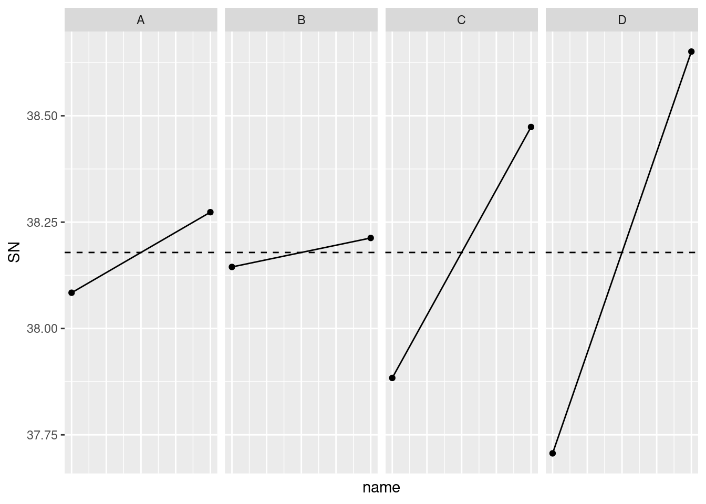

실험 계획 방법과 분산 분석은 제품이나 공정을 설계하고 개선하는데 적극 활용되고 있다[1, 2]. 다구치 방법은 신호 대 잡음의 비인 SN비로 손실 함수를 정의하여 제어 인자 조합의 성능을 비교할 수 있도록 한다. 실험 계획은 실험 계획법의 부분 요인 설계 등의 방법을 이용하여 세우거나, 특히 다구치 방법에서 제안하는 직교배열을 이용하여 세울 수 있다[3]. 이 글에서는 직접 회로의 최대 결합 강도를 달성하기 위하여 다구치 방법으로 설계 파라미터를 탐색해 본다[1].
실험 인자는 A, B, C, D 4가지이며, 각 요인의 수준은 2개이다. 각 실험에 대하여 5회 반복 측정을 수행하였다.
library(tidyverse)
circuits <- tibble(
A = rep(c(-1, 1), each = 4, times = 1),
B = rep(c(-1, 1), each = 2, times = 2),
C = rep(c(-1, 1), each = 1, times = 4),
D = c(-1, 1, 1, -1, 1, -1, -1, 1),
y1 = c(73, 87.7, 80.5, 79.8, 85.2, 78, 78.4, 90.2),
y2 = c(73.2, 86.4, 81.4, 77.8, 85, 75.5, 72.8, 87.4),
y3 = c(72.8, 86.9, 82.6, 81.3, 80.4, 83.1, 80.5, 92.9),
y4 = c(72.2, 87.9, 81.3, 79.8, 85.2, 81.2, 78.4, 90),
y5 = c(76.2, 86.4, 82.1, 78.2, 83.6, 79.9, 67.9, 91.1)
) %>%
mutate(id = row_number()) %>%
relocate(id)
circuits## # A tibble: 8 x 10
## id A B C D y1 y2 y3 y4 y5
## <int> <dbl> <dbl> <dbl> <dbl> <dbl> <dbl> <dbl> <dbl> <dbl>
## 1 1 -1 -1 -1 -1 73 73.2 72.8 72.2 76.2
## 2 2 -1 -1 1 1 87.7 86.4 86.9 87.9 86.4
## 3 3 -1 1 -1 1 80.5 81.4 82.6 81.3 82.1
## 4 4 -1 1 1 -1 79.8 77.8 81.3 79.8 78.2
## 5 5 1 -1 -1 1 85.2 85 80.4 85.2 83.6
## 6 6 1 -1 1 -1 78 75.5 83.1 81.2 79.9
## 7 7 1 1 -1 -1 78.4 72.8 80.5 78.4 67.9
## 8 8 1 1 1 1 90.2 87.4 92.9 90 91.1측정치의 평균, 분산, SN비는 tidyverse 함수들을 이용하여 다음과 같이 계산할 수 있다. 다구치 방식에서 분산은 통계에서 주로 사용하는 불편 추정량을 이용하지 않는 경우가 있다는 점을 언급해 두겠다.
circuits <- circuits %>%
select(-c(A, B, C, D)) %>%
pivot_longer(cols = -id) %>%
group_by(id) %>%
summarise(m = mean(value),
s = sd(value),
sn = -10 * log10(1 / 5 * sum(1 / value^2))) %>%
left_join(circuits, by = "id")## `summarise()` ungrouping output (override with `.groups` argument)circuits## # A tibble: 8 x 13
## id m s sn A B C D y1 y2 y3 y4 y5
## <int> <dbl> <dbl> <dbl> <dbl> <dbl> <dbl> <dbl> <dbl> <dbl> <dbl> <dbl> <dbl>
## 1 1 73.5 1.57 37.3 -1 -1 -1 -1 73 73.2 72.8 72.2 76.2
## 2 2 87.1 0.709 38.8 -1 -1 1 1 87.7 86.4 86.9 87.9 86.4
## 3 3 81.6 0.804 38.2 -1 1 -1 1 80.5 81.4 82.6 81.3 82.1
## 4 4 79.4 1.41 38.0 -1 1 1 -1 79.8 77.8 81.3 79.8 78.2
## 5 5 83.9 2.06 38.5 1 -1 -1 1 85.2 85 80.4 85.2 83.6
## 6 6 79.5 2.93 38.0 1 -1 1 -1 78 75.5 83.1 81.2 79.9
## 7 7 75.6 5.17 37.5 1 1 -1 -1 78.4 72.8 80.5 78.4 67.9
## 8 8 90.3 1.99 39.1 1 1 1 1 90.2 87.4 92.9 90 91.18번 실험의 조합이 SN비가 가장 크다는 것을 확인하였다. 각 요인의 영향은 선형 회귀를 통하여 확인해 볼 수 있다.
fit.1 <- lm(sn ~ A + B + C + D, data = circuits)
summary(fit.1)##
## Call:
## lm(formula = sn ~ A + B + C + D, data = circuits)
##
## Residuals:
## 1 2 3 4 5 6 7 8
## 0.03597 -0.02143 -0.06465 0.05011 0.05011 -0.06465 -0.02143 0.03597
##
## Coefficients:
## Estimate Std. Error t value Pr(>|t|)
## (Intercept) 38.17870 0.02653 1439.212 7.4e-10 ***
## A 0.09468 0.02653 3.569 0.037574 *
## B 0.03405 0.02653 1.284 0.289398
## C 0.29495 0.02653 11.119 0.001559 **
## D 0.47219 0.02653 17.800 0.000387 ***
## ---
## Signif. codes: 0 '***' 0.001 '**' 0.01 '*' 0.05 '.' 0.1 ' ' 1
##
## Residual standard error: 0.07503 on 3 degrees of freedom
## Multiple R-squared: 0.9934, Adjusted R-squared: 0.9847
## F-statistic: 113.7 on 4 and 3 DF, p-value: 0.001321요인 B의 효과는 유의하지 않다. 주 효과를 다음과 같이 도시할 수 있다.
coefs <- as_tibble(coef(fit.1))
intercept = coefs %>% slice(1) %>% pull()
coef <- coefs %>%
slice(-1) %>%
mutate(Factor = c("A", "B", "C", "D"))
coef %>%
mutate(l1 = intercept - value,
l2 = intercept + value) %>%
select(-value) %>%
pivot_longer(cols = -Factor) %>%
mutate(name = factor(name, ordered = TRUE),
name = as.numeric(name)) %>%
ggplot(aes(x = name, y = value)) +
geom_line() +
facet_wrap(~ Factor, nrow = 1) +
geom_point() +
geom_hline(yintercept = intercept, linetype = 20) +
ylab("SN") +
theme(axis.text.x = element_blank(),
axis.ticks.x = element_blank())
요인 C와 D의 회로 접합 강도에 미치는 영향이 큰 것을 알 수 있다. 이 요인을 중시하여 결합 방법을 결정할 필요가 있다.
이 글에서는 성능 특성만으로 다구치 방법의 일면을 확인해 보았다. 하지만 제조 및 공정 설계 및 개선을 위해서는 성능뿐만 아니라 비용을 따져봐야 한다. 이 비용에는 재 가공이나 판매 후 서비스 비용까지 종합적으로 고려하여야 한다. 파라미터 선택과 허용차 설계까지 개발 부서의 라인외 품질 관리를 강화해 내는 것이 다구치 품질 관리의 철학이라고 할 수 있다.
Ting Kong, Taguchi methods in experimental design, https://www.lexjansen.com/mwsug/1996/MWSUG96021.pdf
Ron S. Kenett and Shelemyahu Zacks, Modern industrial statistics, Chapter 13. Quality by Design, Duxbury press, 1998
Orthogonal arrays (Taguchi Designs), https://www.york.ac.uk/depts/maths/tables/orthogonal.htm